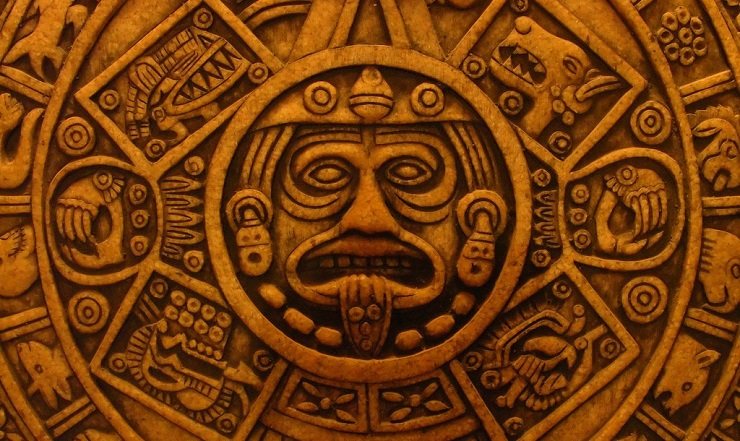

Se considera como música prehispánica de México toda aquella que del período arcaico hasta la llegada de los españoles a México. Las únicas fuentes con que se cuenta para conocer lo que fuera la música prehispánica de las diferentes culturas étnicas que florecieron en México se encuentra en la evidencia arqueológica de códices, pinturas murales, los propios instrumentos musicales encontrados, así como las posteriores descripciones dadas por los cronistas hispanos. Un análisis musicológico del ritual mexica no puede prescindir de la noción original de integridad que se observa en el arte prehispánico. La música, la danza y la poesía fueron consideradas como un todo dentro de la práctica azteca. Se incluía en sacrificios, penitencias, ofrendas, ingestión de alucinógenos y otros tipos de hierbas. Los artistas, aun cuando recibiesen honores y riquezas, formaban parte del servicio doméstico de los señores. Los músicos recibían un mecátl o cordel distintivo (de donde viene la palabra americana mecate (del nahuatl mecatl, cordel), que portaban en la cabeza, colgando las puntas encima del pecho. Heredaron por línea directa el instrumental tolteca (por ende teotihuacano) asimilando el legado de las culturas contemporáneas de toda Mesoamérica.
Gabriel Edilberto Ramírez Vázquez Nl: 33